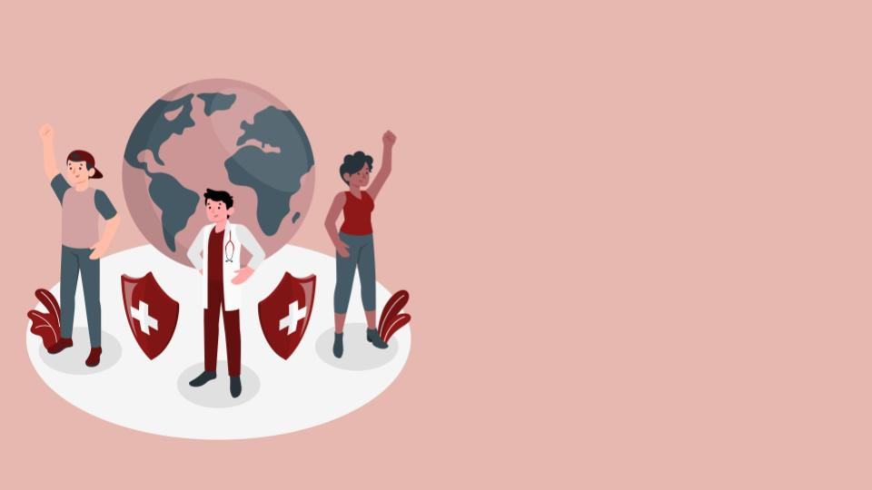

World-wide
Working with everyone
Reaching people all over the globe and making sure everyone receives the medical and educational support they deserve.
Medical and Educational access to all
A nonprofit organization committed to giving proper medical and educational access to all in need. We spread awareness about hygiene, sanity, nutrition, water safety while supporting the underprivileged in healthcare aspects.
One of the biggest things that we work for is to give healthcare to all. Whether that is providing supplies, funding them, or working with professionals to get them treatment.
Another thing we do at Med n' Ed is provide world wide resources. These resources consist of medical and sanitary supplies or providing for the underprivileged through book drives.
→We strive to bring education about healthcare, sanity, science, etc. to all! It is important that people are aware about how to properly take care of themselves to avoid health problems.
More about us
Partner up with doctors and medical professionals all over the globe to give medical support to those who need it as well as working with organizations with similar missions.
Fund/sponsor government hospitals or organizations that work to give medical access to people in need, but lack funding.
Connect with doctors in various parts of the world to build a team that helps people in healthcare aspects through checkups, giving them medical prescriptions, or supporting them.
Work with underprivileged kids that lack basic educational and sanitary resources and teach them about healthcare, sanity, water safety, nutrition etc.
Have engaging fundraisers that educate the crowd while collecting funds that go to our current projects.
Spread awareness about the cause we work for through various types of events such as webinars, seminars, and other engaging events.
For partnerships and business enquiries contact us via email.